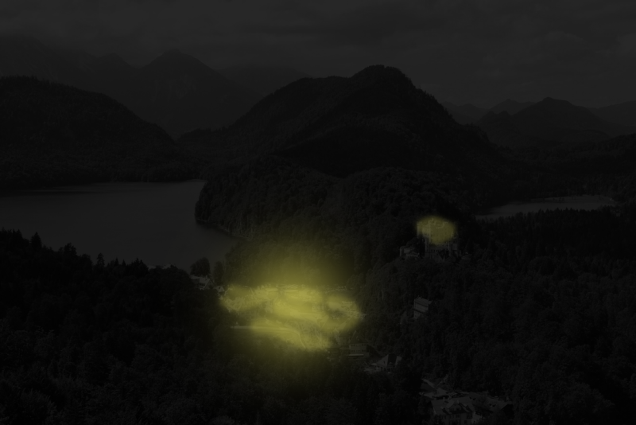

Выйдя из домика монаха, ты увидел в далеке странный силуэт. Поняв, что это разбойник ты принимаешь решение сражаться.
—Ну чё, щенок, гони бабло и вещи!
—Ты думаешь я так просто сдамся?
—Тогда ты умрёшь. С твоего трупа взять вещи будет проще!
—Начнём же
Вспомнив то, чему тебя учили, ты смог паразить разбойника в самое сердце! Осмотрев его, ты берёшь себе его кинжал и горстку золота.
—Итак куда же мне идти ?

<=Идти напрямую по дорогам***********|************Идти через лес=>